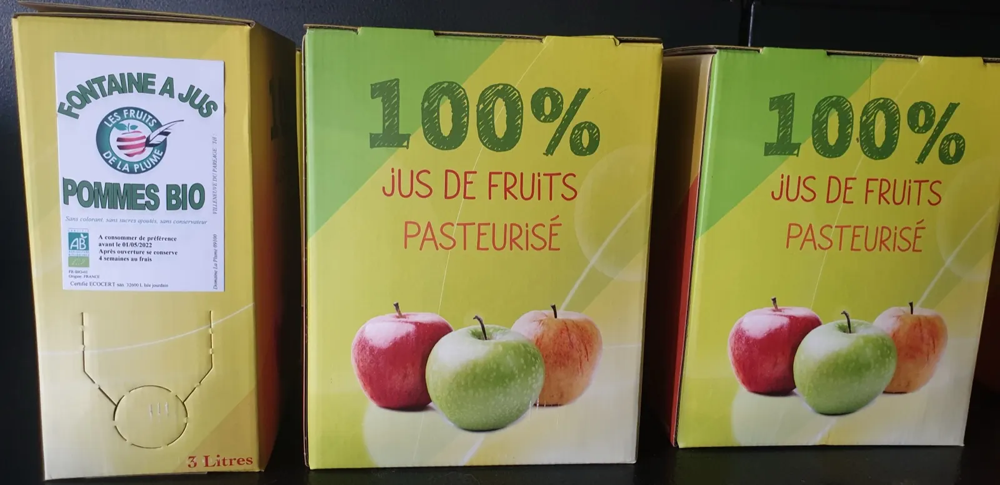
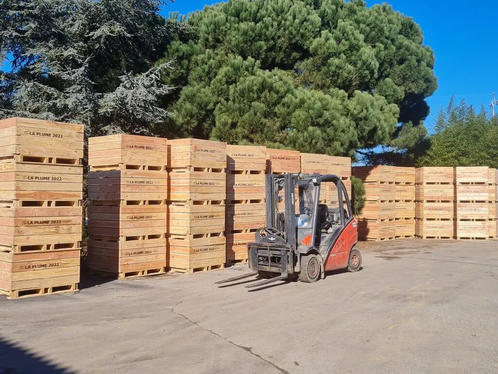
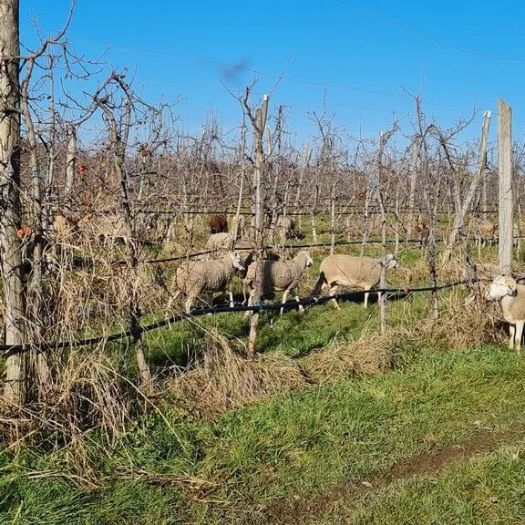
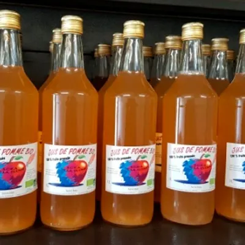
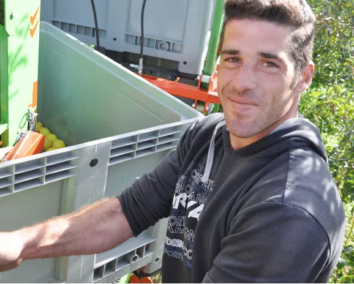

Nos fruits bio, près de chez vous.

Le domaine Les Fruits de la Plume est une petite propriété familiale de 38 hectares à Villeneuve-du-Paréage, dans la basse Ariège. Nos fruits bio et ceux produits en conversion biologique sont vendus à la ferme, sur les marchés de l'Ariège, de l'Aude et de la Haute-Garonne, et sur les tournées.
- 38 hectaresune petite propriété familiale en basse Ariège
- depuis 1961la famille Camarena, trois générations sur le domaine
- biofruits bio et en conversion biologique
- 3 départementsdes marchés en Ariège, dans l'Aude et en Haute-Garonne
Nos marchés, jour par jour
Venez nous rencontrer sur nos marchés et découvrir nos étalages de fruits, nos asperges, nos jus de pomme et jus pétillants bio, nos confitures, notre miel et nos croustades aux pommes « maison ».
- Lundi
- MirepoixAriège CastelnaudaryAude Salies-du-SalatHaute-Garonne
- Mardi
- Saint-LysHaute-Garonne
- Mercredi
- Le Mas-d'AzilAriège LavelanetAriège LabartheHaute-Garonne
- Jeudi
- CarbonneHaute-Garonne Airbus BlagnacHaute-Garonne
- Vendredi
- FoixAriège Villefranche-de-LauragaisHaute-Garonne CastanetHaute-Garonne
- Samedi
- PamiersAriège TarasconAriège Saint-Jean-de-l'UnionHaute-Garonne Saint-OrensHaute-Garonne RamonvilleHaute-Garonne CastelginestHaute-Garonne
- Dimanche
- LéguevinHaute-Garonne PinsaguelHaute-Garonne Montbrun-BocageHaute-Garonne
Vous avez commandé au Drive ? Vous pouvez retirer votre commande sur le marché de votre choix. Pour la retirer sur un marché cité, pensez à nous appeler pour bénéficier d'un code « Livraison gratuite ».
Un doute sur un marché, ou pour le code livraison :
06 63 86 47 74Au magasin du domaine
SCEA La Plume09100 Villeneuve-du-Paréage
Le domaine se trouve à Villeneuve-du-Paréage, un tout petit village de la basse Ariège blotti contre la périphérie de Pamiers. Avant de venir, appelez Franck au 06 63 86 47 74 ou écrivez à fruitsdelaplume@orange.fr.


Le Drive de la Plume
Choisissez vos produits en ligne, réglez votre commande et retirez-la sur le marché de votre choix.
- Pensez aux commandes groupées
- Livraison possible autour de Pamiers : conditions sur le Drive
Production bio et en agriculture raisonnée
Pommes, poires, cerises, fraises, raisins, melons, abricots, pêches, kiwis, noix et noisettes, mais aussi asperges et jus bio.
Le jus de pomme bio existe en clair ou en trouble, en bouteille ou en fontaine de 3 litres.
Nos dispositifs de production biologique
Du fumier pour fertiliser et enrichir les sols
Des lâchers de coccinelles
Des lâchers de prédateurs des insectes nuisibles aux cultures
L'implantation de haies d'arbustes

Notre histoire
« À l'heure de la mondialisation (…), il y a une alternative… Bien sûr, elle fait parfois sourire (…). Puis on regarde la production, on voit ces fruits exempts de pesticides, alors on réfléchit, et on se dit que manger sain a du bon ! »

Franck Camarenatroisième génération sur le domaine- 1961
Maxime et Carmelle Camarena s'implantent sur le domaine de la Plume et décident d'y cultiver des pommiers.
- 1978
Leur fils Jacques rachète la propriété et monte un GAEC avec son frère Bernard. Peu à peu, les tournées et les marchés sont mis en place.
- 1983
Jacques rachète les parts de son frère et étend peu à peu le domaine. Il acquiert un verger de 12 hectares dans l'Aude, où sont cultivés les fruits d'été.
- 2002
Franck Camarena, de la troisième génération, introduit les fruits bio, qui connaîtront un véritable succès.
- 2014
Jacques prend sa retraite. Son fils Franck lui succède et fonde l'actuelle SCEA de la Plume et la SAS La Plume.